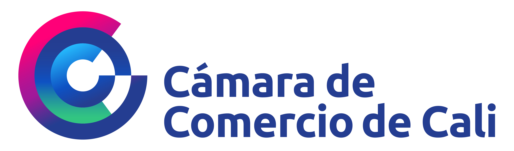

Ritmo Exportador
Enero – Octubre 2025

"Entre enero y octubre de 2025, las exportaciones del Valle del Cauca presentaron un desempeño sobresaliente, consolidando a la región como uno de los motores comerciales mas dinámicos del país."
Contexto Nacional
Entre enero y octubre de 2025, las exportaciones de Colombia alcanzaron USD 40.950 millones,
creciendo un 1,7% anual. Si se excluye el petróleo y sus derivados, el crecimiento fue notablemente superior, situándose en 9,8%,
un comportamiento impulsado principalmente por el dinamismo en los bienes no tradicionales (NME).
Total Nacional
+15,7%
Valor USD FOB
Total Volumen
+11,5%
Toneladas métricas
Valor NME
128
No Minero Energético
Volumen NME
1.257
No Minero Energético
Evolución Exportadora (USD Millones FOB)
Fuente: DANE - Cálculos Cámara de Comercio de Cali
Principales grupos de productos de exportación nacional
Los veinte principales grupos de productos de
exportación en Colombia representaron el 96,0% del
total exportado por el país entre enero y octubre de 2025, registrando un incremento anual de 1,6% (Cuadro 1). El grupo de café, té y especias fue el de mayor dinamismo, en términos absolutos, con un aumento de USD 2.088 millones, impulsado principalmente por el crecimiento tanto en volumen como en valor de las exportaciones de café.
En contraste, el grupo de combustibes registró la mayor contracción, debido a la caída de las ventas externas de hulla, coque y briquetas y petróleo, productos derivados del petróleo y productos conexos que contribuyeron, en conjunto, con 19,6 puntos porcentuales negativos a la variación del grupo.
En contraste, el grupo de combustibes registró la mayor contracción, debido a la caída de las ventas externas de hulla, coque y briquetas y petróleo, productos derivados del petróleo y productos conexos que contribuyeron, en conjunto, con 19,6 puntos porcentuales negativos a la variación del grupo.
Variación mensual
En el registro correspondiente al mes de octubre de
2025, las ventas externas sin minería, petróleo y sus
derivados de Colombia se incrementaron 15,2% frente al mismo mes del año anterior.
Por su parte, Valle del Cauca presentó un crecimiento anual del 5,6% en este mismo segmento, manteniendo una dinámica positiva, aunque con variaciones pronunciadas.
Por su parte, Valle del Cauca presentó un crecimiento anual del 5,6% en este mismo segmento, manteniendo una dinámica positiva, aunque con variaciones pronunciadas.
Variación anual de las exportaciones sin minería, petróleo y sus derivados de Colombia y Valle del Cauca (%)
Enero - Octubre (2024 - 2025)
Colombia
Valle del Cauca
Fuente: DANE - Cálculos Cámara de Comercio de Cali
Balance Regional (Valle del Cauca)
Los principales departamentos del país registraron
crecimientos en el valor de sus exportaciones en lo
corrido de 2025 a octubre.
El Valle del Cauca registró el segundo mayor crecimiento (15,7%) en el valor de sus exportaciones, al pasar de USD 1.961 millones en enero-octubre de 2024 a USD 2.269 millones en el mismo periodo de 2025. Lo anterior indica que la región está logrando una mayor consolidación progresiva de sus sectores productivos, fortaleciendo su competitividad en los mercados internacionales.
El Valle del Cauca registró el segundo mayor crecimiento (15,7%) en el valor de sus exportaciones, al pasar de USD 1.961 millones en enero-octubre de 2024 a USD 2.269 millones en el mismo periodo de 2025. Lo anterior indica que la región está logrando una mayor consolidación progresiva de sus sectores productivos, fortaleciendo su competitividad en los mercados internacionales.
Valor Exportado
+15,7%
USD FOB vs 2024
Volumen
+11,5%
Toneladas métricas
Mercados
128
Países destino
Oferta
1.257
Subpartidas
Empresas
1.257
Exportadoras
VARIACIÓN ABSOLUTA DEL VALOR EXPORTADO (USD MILES)
Georreferenciación por valor FOB
Principales países destino de las Exportaciones del Valle
Siete de los diez principales destinos hacia donde
exportaron las empresas del Valle del Cauca entre enero y octubre de 2025 registraron variaciones positivas.
EE.UU. continúa presentando la mayor expansión absoluta anual (+USD 114 millones) (Gráfico 5). Por su parte, las ventas externas del Valle del Cauca hacia México, Chile y China registraron disminuciones del 0,7%, 5,1% y 8,4% respectivamente; atribuible, principalmente, a menores ventas externas de hilos, cables y conductores aislados para electricidad, azúcar y aguacates.
EE.UU. continúa presentando la mayor expansión absoluta anual (+USD 114 millones) (Gráfico 5). Por su parte, las ventas externas del Valle del Cauca hacia México, Chile y China registraron disminuciones del 0,7%, 5,1% y 8,4% respectivamente; atribuible, principalmente, a menores ventas externas de hilos, cables y conductores aislados para electricidad, azúcar y aguacates.
Valor de las exportaciones totales del Valle del Cauca - Principales destinos (USD Millones*)
Enero - Octubre (2024 - 2025)
2024
2025
Fuente: DIAN, DANE - Cálculos Cámara de Comercio de Cali
*Por efecto del redondeo en millones, los totales pueden diferir ligeramente.
*Por efecto del redondeo en millones, los totales pueden diferir ligeramente.
Principales productos exportados desde el Valle del Cauca
Los veinte principales productos de exportación del Valle del Cauca representaron el 64,4% del valor exportado en lo corrido de 2025 a octubre, registrando un crecimiento del 15,6% frente al mismo periodo de 2024. De estos, 15 productos aumentaron su valor exportado, reflejando una dinámica positiva en la canasta exportadora del departamento.
El café continuó liderando el crecimiento (+USD 125 millones; +103,0%). El comportamiento estuvo respaldado por incremento del precio internacional del grano y por el aumento de la producción.
Asimismo, se destacaron productos como dispositivos de almacenamiento y tarjetas inteligentes, hilos, cables y conductores aislados para electricidad y artículos de confitería sin cacao, que aportaron significativamente al incremento del valor exportado del departamento.
El café continuó liderando el crecimiento (+USD 125 millones; +103,0%). El comportamiento estuvo respaldado por incremento del precio internacional del grano y por el aumento de la producción.
Asimismo, se destacaron productos como dispositivos de almacenamiento y tarjetas inteligentes, hilos, cables y conductores aislados para electricidad y artículos de confitería sin cacao, que aportaron significativamente al incremento del valor exportado del departamento.
Análisis Sectorial Destacado (Valle del Cauca)
Exportaciones de Manufacturas
Entre enero y octubre de 2025, el Valle del Cauca
participó con el 13,4% de las exportaciones manufactureras de Colombia, superando en 0,6 puntos porcentuales el registro del mismo periodo de 2024. Este avance resalta el fortalecimiento de su presencia en el panorama exportador nacional.
Distribución de las exportaciones
manufactureras de Colombia– principales departamentos (%)
Enero - Octubre (2024 - 2025)
Fuente: DIAN, DANE - Cálculos Cámara de Comercio de Cali
*Según clasificación CUCI
*Según clasificación CUCI
Desempeño Histórico Manufacturero
El valor de las exportaciones manufactureras del Valle del Cauca alcanzó los USD 1.225 millones en lo acumulado de 2025 a octubre, superando la cifra en un 39,7% en comparación con 2019, y registrando un incremento del 9,7% respecto al mismo periodo de 2024.
Valor de las exportaciones manufactureras* del Valle del Cauca (USD miles**)
Enero - Octubre (2024 - 2025)
Fuente: DIAN, DANE - Cálculos Cámara de Comercio de Cali
*Según clasificación CUCI
**Por efecto del redondeo en miles, los totales pueden diferir ligeramente
*Según clasificación CUCI
**Por efecto del redondeo en miles, los totales pueden diferir ligeramente
Principales grupos de productos manufactureros exportados
En enero-octubre de 2025, los 10 productos
manufactureros con mayor crecimiento absoluto
sumaron USD 1.089 millones, equivalentes al 89% del valor exportado por el Valle del Cauca. El mayor aporte provino de maquinaria eléctrica (+USD 32,1 millones), seguido por productos farmacéuticos y aceites esenciales , perfumería , cosméticos . Esto sugiere una canasta exportadora más sofisticada impulsada por bienes de mayor valor agregado.
Principales destinos de las exportaciones manufactureras
Entre enero y octubre de 2025, el Valle del Cauca
participó con el 13,4% de las exportaciones manufactureras de Colombia, superando en 0,6 puntos porcentuales el registro del mismo periodo de 2024. Este avance resalta el fortalecimiento de su presencia en el panorama exportador nacional.
Participación de los principales países destino (%)
Enero - Octubre (2024 - 2025)
Fuente: DIAN, DANE - Cálculos Cámara de Comercio de Cali
Actualizado el 16 de enero de 2026